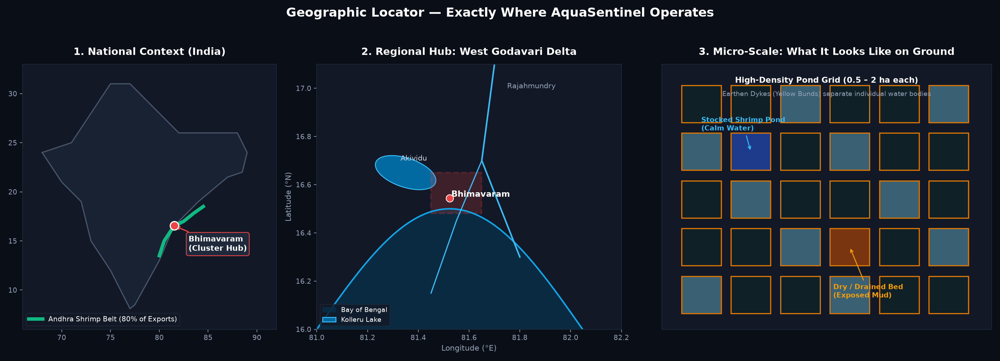
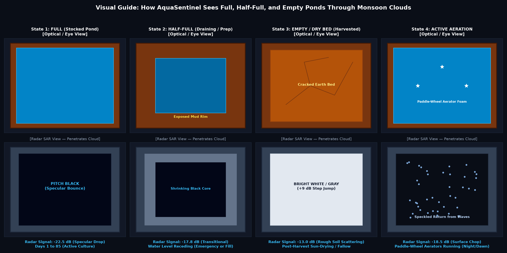
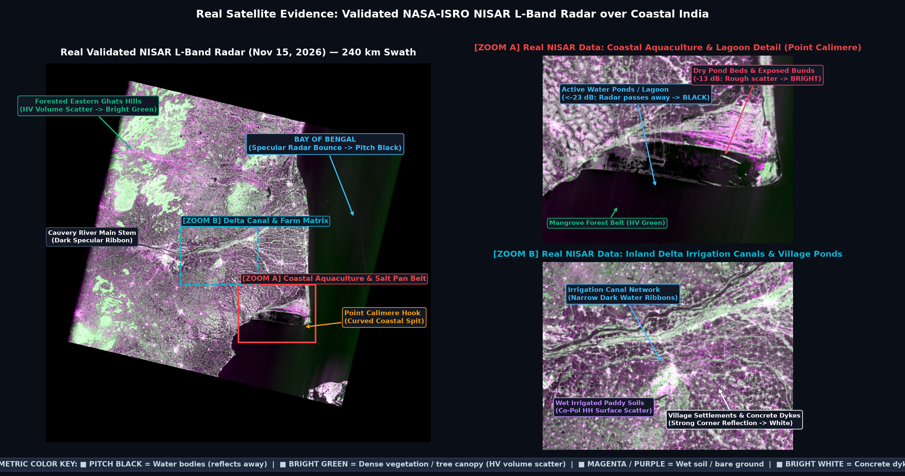
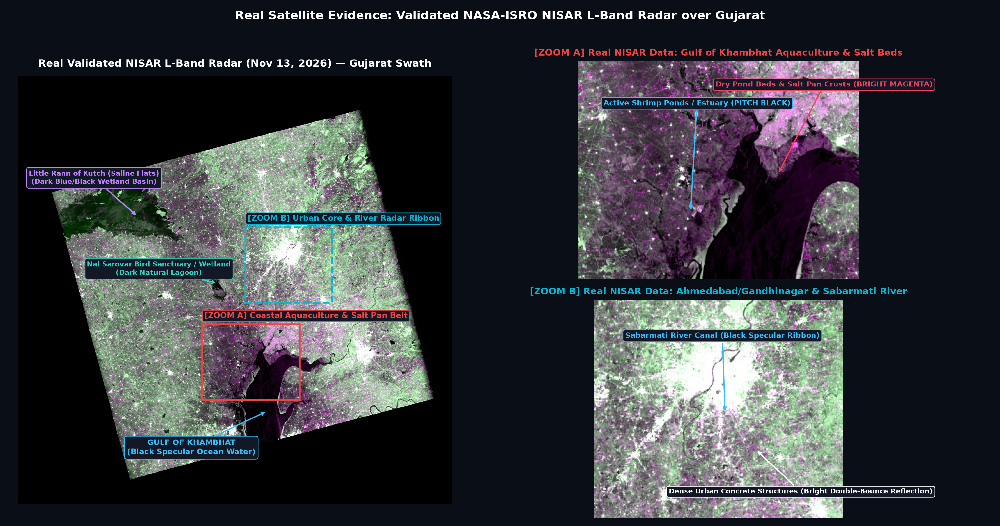
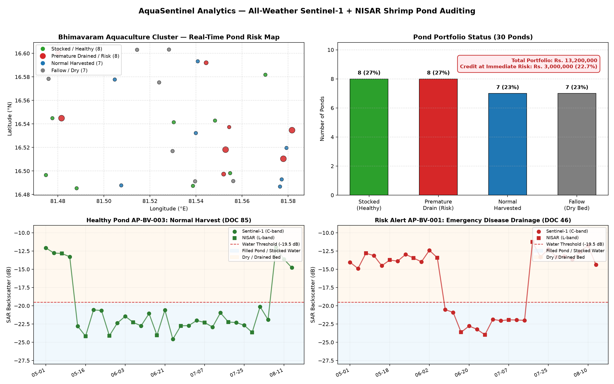

Stop Losing Feed Credit to Secret Emergency Harvests
AquaSentinel continuously tracks coastal shrimp pond water levels every 72 hours through monsoon clouds and rain — alerting feed manufacturers and lenders the moment a pond is drained prematurely before money leaves the gate.
The ₹40,000 Crore Aquaculture Credit Blindspot
In Andhra Pradesh (Bhimavaram, Nellore) and Gujarat (Surat), feed companies extend crores in unsecured credit per crop cycle. When disease strikes, you find out too late.

1. The Secret Emergency Drain (WSSV / EHP)
When disease hits at Day 35–50, the farmer drains the pond overnight, harvests undersized shrimp, and sells directly to cash agents. By the time your field officer visits on a motorbike 2 weeks later, the money is gone and the credit is in default.
2. Optical Satellites Go Blind When It Matters Most
Standard optical satellites (Sentinel-2, Landsat) cannot see through coastal monsoon fog and rain clouds from June to October — precisely when shrimp farming activity, feed consumption, and disease risks peak.
How Radar SAR Sees Full, Half-Full, and Empty Ponds in Rain & Cloud
Synthetic Aperture Radar (SAR) emits microwave energy that passes freely through clouds, fog, and nighttime. Water and dry earth have radically different physical signatures.

Water-Filled Pond: Specular Reflection (< -20 dB)
Calm pond water acts as a mirror, reflecting radar energy away from the sensor. Filled ponds appear pitch-black in radar imagery.
Dry / Drained Pond Bed: Rough Scattering (-12 to -15 dB)
Exposed, cracked soil scatters diffuse microwave energy directly back to the sensor. Drained ponds appear bright gray/white with an immediate +8 to +10 dB step jump.
Real Satellite Evidence: Validated NASA-ISRO NISAR Radar over India
Below are the actual, live November 2026 Level-2 Validated NISAR L-Band SAR acquisitions pulled directly from NASA ASF Earthdata Cloud over the East Coast (Tamil Nadu/Cauvery Delta) and West Coast (Gujarat/Gulf of Khambhat) with callout boxes and feature labels.


Why Water Shows Up Pitch-Black in Real Radar
Look at the Bay of Bengal and Gulf of Khambhat in both real images: calm water acts like a mirror, reflecting the 24 cm microwave radar beam away from the sensor. Filled shrimp ponds appear as pure black polygons.
Why Drained Ponds & Salt Flats Glow Bright Magenta/White
Look at the coastal salt beds and dry pond beds around Point Calimere and the Khambhat estuary: exposed rough cracked soil scatters radar energy directly back, producing a dramatic +8 to +10 dB brightness surge that alerts our state machine.
Bhimavaram Cluster Audit (30-Pond Portfolio)
Real-time portfolio evaluation over India's aquaculture capital in West Godavari, Andhra Pradesh, combining Sentinel-1 C-band and NISAR L-band observations.

🟢 Healthy Commercial Harvest (Pond AP-BV-003)
Stocked on May 16, maintaining steady water backscatter (< -20 dB) for 85 Days of Culture (DOC) until normal commercial harvest in mid-August. Clean credit progression.
🔴 Emergency Disease Crash Alert (Pond AP-BV-001)
Stocked in June, suddenly drained at Day 46 of Culture (radar backscatter surged +9 dB). Immediate CRITICAL default warning flagged with ₹2,50,000 credit at risk.
What You & Your Field Team Receive
No raw satellite coordinates or complex GIS files. Clear, actionable decisions delivered directly to your credit and field recovery teams.
Village: Akividu, West Godavari
Status: Premature Drainage Detected on 18-Jul
Days of Culture (DOC): 46 Days (Harvest Expected: 85+ Days)
Outstanding Credit: ₹2,50,000
⚡ Action: Probable emergency disease harvest. Immediate field inspection recommended before shrimp leaves the farm.
1. Instant WhatsApp & Webhook Alerts
Notifies your recovery team within 72 hours of a pond being drained, giving you time to recover credit before funds are dissipated.
2. Monday Morning Cluster Audit (Excel / PDF)
Portfolio status breakdown across your entire dealership: active ponds, days in culture, upcoming feed demand, and default-risk accounts.
3. Pre-Season Credit Underwriting Scorecard
Verify historical 3-year track record: did this farmer complete normal cycles in the past or suffer repeated early washouts?
Validate on Your Own Farmers' Ponds
Share 20 GPS pins from your dealership or mill. We will deliver a free historical radar audit report showing the exact stocking and drainage dates of their last two seasons.